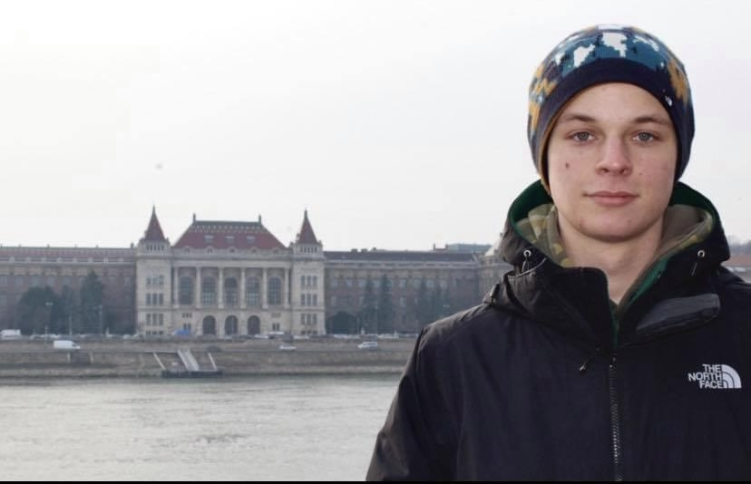

Néhány szó magamról: elsőéves hallgató vagyok a Budapesti Műszaki- és Gazdaságtudományi Egyetem Gépész karán. Van 3 darab lány testvérem. Két hobbim van, amit mindennél jobban szeretek, ez a síoktatás/síelés és az autóversenyzés. Az utóbbit ebben a szezonban kezdtem, bár sokan a családból nem támogatják.